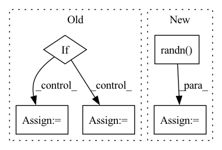

Pattern ID :40592
Before Change
eps = torch.randn((num_samples, self.d), dtype=self.loc.dtype, device=self.loc.device)
z_ = self.loc + torch.exp(self.log_scale) * eps
acc = self.a(z_)
if self.training or self.Z == None:
if i == 0:
Z_batch = torch.mean(acc)
Z_sum = torch.sum(acc).detach()
else:
Z_sum = Z_sum + torch.sum(acc).detach()
n = n + num_samples
dec = torch.rand_like(acc) < acc
for j, dec_ in enumerate(dec):After Change
s = 0
n = 0
for i in range(self.T):
eps = torch.randn( (num_samples, self.d), dtype=self.loc.dtype, device=self.loc.device)
z_ = self.loc + torch.exp(self.log_scale) * eps
acc = self.a(z_)
if self.training or self.Z == None:In pattern: SUPERPATTERN
Frequency: 3
Non-data size: 5
Instances Fragment ID: 114821593
Project Name: vincentstimper/normalizing-flows
Commit Name: 7d58159119f4ea9785682b1726a8243124c84c04
Time: 2020-08-18
Author: vincent.stimper@gmail.com
File Name: normflow/distributions.py
M Class Name: ResampledGaussian
N Class Name: ResampledGaussian
M Method Name: forward(2)
N Method Name: forward(2)
M Parent Class: BaseDistribution
N Parent Class: BaseDistribution
M File Name: normflow/distributions.py
N File Name: normflow/distributions.py
M Start Line: 91
M End Line: 125
N Start Line: 93
N End Line: 129
Before Change
onnx.checker.check_model(onnx_model)
except RuntimeError as e:
opset_version=11
if "aten::upsample_bilinear2d" in e.args[0]:
operator_export_type = torch.onnx.OperatorExportTypes.ONNX_ATEN_FALLBACK
torch.onnx.export(model, dummy_input, onnx_file, verbose=True,
input_names=[ "input" ] , output_names=["output"],
opset_version = opset_version,
operator_export_type=operator_export_type)
onnx_model = onnx.load(onnx_file)
onnx.checker.check_model(onnx_model)
else:
raise Exception(e)After Change
if check_model_is_cuda(model):
dummy_input = tuple([torch.randn(ishape, device="cuda") for ishape in input_shape])
else:
dummy_input = tuple([torch.randn( ishape, device="cpu") for ishape in input_shape])
elif type(input_shape) == tuple:
if check_model_is_cuda(model):
dummy_input = torch.randn(input_shape, device="cuda") Fragment ID: 114821598
Project Name: kuroko1t/nne
Commit Name: a00ac8516ac6f9381d377673bd5eeb6db0c7961c
Time: 2021-05-18
Author: kurosawa.yk@gmail.com
File Name: nne/onnx.py
M Class Name: AnonimousClass
N Class Name: AnonimousClass
M Method Name: cv2onnx(4)
N Method Name: cv2onnx(4)
M Parent Class:
N Parent Class:
M File Name: nne/onnx.py
N File Name: nne/onnx.py
M Start Line: 30
M End Line: 57
N Start Line: 30
N End Line: 50
Before Change
dims = [channels, *map(lambda m: dim * m, dim_mults)]
in_out = list(zip(dims[:-1], dims[1:]))
if with_time_emb:
time_dim = dim
self.time_mlp = nn.Sequential(
SinusoidalPosEmb(dim),
nn.Linear(dim, dim * 4),
nn.GELU(),
nn.Linear(dim * 4, dim)
)
else:
time_dim = None
self.time_mlp = None
self.downs = nn.ModuleList([])
self.ups = nn.ModuleList([])After Change
nn.Linear(dim * 4, dim)
)
self.null_image_embed = nn.Parameter(torch.randn( image_embed_dim) )
cond_dim = time_dim + image_embed_dim
Fragment ID: 114821652
Project Name: lucidrains/dalle2-pytorch
Commit Name: 25d980ebbf1e22ce8396cdec400e22e83f754176
Time: 2022-04-12
Author: lucidrains@gmail.com
File Name: dalle2_pytorch/dalle2_pytorch.py
M Class Name: Unet
N Class Name: Unet
M Method Name: __init__(0)
N Method Name: __init__(2)
M Parent Class: nn.Module
N Parent Class: nn.Module
M File Name: dalle2_pytorch/dalle2_pytorch.py
N File Name: dalle2_pytorch/dalle2_pytorch.py
M Start Line: 330
M End Line: 357
N Start Line: 345
N End Line: 356